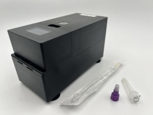

Project Introduction
Overview

The Near Point-Of-Care Bead Beater (nPOC-BB) is a portable sample preparation instrument that is designed to:
- produce a biosafe cell lysate,
- release amplifiable cellular nucleic acids, and
- stabilize released nucleic acids by thermal denaturation of nucleases;
all from a minimally treated human specimen, especially when collected by a swab and transferred into a small (≤3 mL) dropper tube filled with buffer and micro-scale glass beads. Collectively, this intended use enables molecular diagnostic applications for detecting difficult-to-lyse pathogens in human biological specimens in a variety of settings.
The mechanisms by which the device achieves these intentions are a combination of heating to near-boiling liquid temperatures and rapid shaking (also known as "bead beating") to shear-force-inducing frequencies. Both mechanisms are important: the heating increases susceptibility of microorganisms to killing and lysis, which improves biosafety and contributes to lysis efficiency, and decreases nuclease activity, which stabilizes the released nucleic acids in the resulting lysate; the shaking drastically increases lysis efficiency, which releases more amplifiable nucleic acids into the resulting lysate than heating alone. We typically measure lysis efficiency by the quantity of amplifiable nucleic acids released from target cells in the sample.
Data generated on this instrument at Global Health Labs (GHL), its original developer, show that for difficult-to-lyse cellular microorganisms, such as Mycobacterium tuberculosis (Mtb), heating alone results in almost no lysis efficiency, while shaking alone (such as with a lab-grade bead beater or homogenizer) results in reduced lysis efficiency, compared to heating and shaking together. Therefore, we created the nPOC-BB instrument for you, the diagnostic test developer who requires a low-cost, portable, robust, and rapid method for the efficient preparation of a sample to be used in a nucleic acid amplification test (NAAT).
The goal of this documentation is to describe the nPOC-BB instrument as a stand-alone instrument whose principles may be replicated in commercial diagnostic (global) health care products, but the development of this specific instrument took place within the context of the development at GHL of NAATOS, a diagnostic system for the nucleic-acid-based detection of Mtb from human tongue swab specimens. However, because the nPOC-BB has also been shown to yield high lysis efficiency of Mtb in human sputum samples, which is an excellent model for a difficult-to-lyse organism in a challenging sample matrices, we believe this instrument will be useful beyond the original application—a claim that of course must be validated in your own context.
Contributors
Global Health Labs (GHL)
GHL is the lead developer of the nPOC-BB device, having invested in several areas of early stage research related to new tools and technologies for diagnosis of tuberculosis (and other endemic infectious disease) in low-resource settings.
- Lex Ball
- Josh Bishop
- Stephen Burkot
- Ryan Calderon
- Simon Ghionea
- Chin Ng Hei
- Isabel Izek
- Matt Keller
- Khushboo Khimani
- Andrew Miller
- Bryan Norton
- Julie Pendergraft
- Jamie Purcell
- Amy Steadman
Central Centerless Grinding (CCG)/Scitus Engineering
CCG is the hardware design and instrument manufacturing partner for the nPOC-BB and NAATOS systems.
Odic
Odic is the electronics design partner for the nPOC-BB and NAATOS systems.
- Rob Filipkowski2
- Liam Sullivan
- Ian O’Neil
- Dylan Derose
Market Access Africa (MAA)
MAA is the African healthcare market research partner for the nPOC-BB and NAATOS systems.
- Olawale Ajose3
- Obakeng Bagopi
- Zipporah Bundi
- Nancy Njoku-Attah
- Wambui Nyabero
- Pam Pillay3
- Newton Runyowa
- Chris Smit
- Shabnam Zavahir
Health Innovation Advisors (HIA)
HIA is the user research and implementation science partner for the nPOC-BB and NAATOS systems.
- Melissa Mugambi4